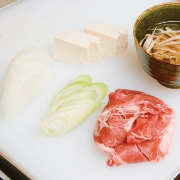
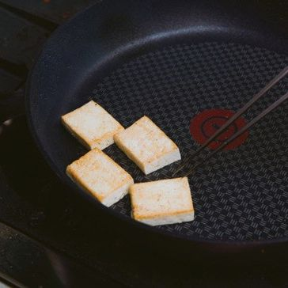
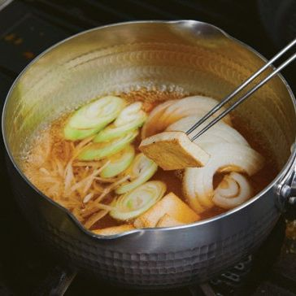
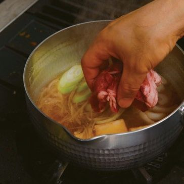

-

우엉은 껍질을 벗겨 연필을 깍듯이 잘라 물에 담가두고, 양파는 0.5cm로 자른 뒤 대파도 0.5cm 두께로 어슷 썰어 주세요.
-

판두부는 2cm x 2cm로 자르고 프라이팬에 노릇노릇하게 구워 주세요.
-

가쓰오 다시와 스키야키 소스 베이스를 섞어준 뒤, 냄비에 고기 놓을 자리를 빼고 순서 1, 2의 모든 재료를 넣고 소스를 부어 끓여주세요.
-

순서 3에 고기를 넣고 끓으면 쑥갓을 올려 마무리 해주세요.
-
날달걀은 따로 준비해서 곁들여 드세요.